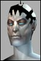

Anarchy Online Bulletin Board > Funcom Official > Article Discussions > Character and organization info on the community site
Anarchy Online Bulletin Board > Funcom Official > Article Discussions > Character and organization info on the community site| Pages (3): « 1 2 [3] |  Last Thread Next Thread Last Thread Next Thread  |
| Author | Thread |
| Vazz Soleet  | Re: im gonna kill.... quote:Hehe, I feel your pain. My name is taken and the person who took it never even plays. |
 November 29th, 2001 15:26 November 29th, 2001 15:26 | #41 |
| Jinjinsu Leet | Identification of Org members I believe that we should be allowed to choose who can and cannot see our Organizations information. Shouldn't it be left to the Organizations? Lets use my guild as an example: The Yagyu Clan has been in existance since the 1600's in the Feudal Japan era. They protected themselves from the warlords of that time by staying underground. A ninja can hardly be a ninja if everyone who sees him knows he's a ninja. In current times, how can my crew be an underground crew if all their information is redily available? I vote for the freedom to disclose information to the public on a need-to-know basis. Individual information on characters is one thing but leave the guilds out of it. Giving guild information to the public of Rubi-ka is making the guilds actions predictable. |
| November 29th, 2001 18:43 | #42 |
| Shadedgrey Eleet  | Great Feature. Not. There should be an option NOT to be listed. It destroys the chance to RP agents from an intel gathering perspective. I now know what all of my counterparts in OT look like, their level and the faction they are in. From there it is simple enough to establish the ID of every agent in the faction. I would have preferred the more challenging route of a 'hacking mission' or using the good old "Mark 1 eyeball" - you know, an RP way of finding info? Now? I can do it from work through my browser. Great. Oh well, Agents are nerfed in all sorts of ways - this is another. I'll get back under my rock now.... |
| November 29th, 2001 18:49 | #43 |
| Champagne Supa Leet  | make sure you read this! I HAVE PAID 50$ FOR A PILE OF ****! AND NOW THAT MY FREE MONTH IS OVER, YOU BET YOUR *** THAT I WONT CONTINUE TO PAY 12.95$ A MONTH SO YOU CAN **** ME WITH ALL YOUR BUGS AND ****!! TO ALL OF YOU NEWCOMMERS THAT JUST BOUGHT "ANARCHY OFFLINE" - YOU SUCKERS - HAVE JUST BEEN HUZZLED BY BUMMERCOM! Funcom: You say you fix things with your patches - well since I bought the game 1 day short of a month now, I have probably downloaded over 20 mb of patches - and the game seems worse now than when I started playing.....!!!! GUESS WHO ISN'T GETTING THEIR MONEY FROM ME IN DECEMBER? You guessed correctly - FUNCOM! GUESS WHO IS GETTING IT INSTEAD? I need only say EQ!! I have played a lot of crappy games in my life - but most of them never promised more than what they were! I COULD HAVE BOUGHT A DOUZEN OF CRAPPY GAMES FOR THE SUM I PAID FOR AO!! FUNCOM : HOW DO I GET MY MONEY BACK? <--- I would really like an answer on this question! Sincerly and disrespectful from a fellow norwegian former AO gamer! EQ - HERE I COME! |
| November 30th, 2001 00:13 | #44 |
| Slivicon Eleet  | I agree with having the option not to disclose your faction and guild, however your name, breed, profession and level should be viewable at all times. For the guild display, though, there needs to be an ability to view the people in your own guild, even if its only for the guild leader. One reason for this is that in my guild, we have some members who haven't registered with our roster, but of course are on the AO roster. We need to compare rosters to keep track of who is not on our roster and contact them about registering. It's also good for simply keeping track of members. Personally, my opinion, is to do the same thing as another MMORPG is doing to enhance the pvp experience. IMHO its brilliant. You can only have characters in one faction per account (this lowers possibility of people playing both sides for info, but does not kill the possibility of in-game infiltration...). Also, you cannot send tells or communicate with people in the opposite faction (no more harassment from opposing side sending you tells and no traitors helping the other side; again, does not stop the possibility of an in-game infiltration). What I mean by in-game infiltration is say, Agents using in game skills and nanos to try and infiltrate the enemy 'posing' as the other side, etc. On that note, I also think to make it more realistic, cities of opposing factions should be political zones or simply off limits to the other side. I mean, come on. Were there a lot of American soldiers walking around yelling LFG in downtown Berlin in WW2? Same with teaming, etc. However, this could/should change as the story changes (peace, war, cold war, etc.). I guess at the present time, with amnesty, that clanners could walk into an omni city...anyway, that's a whole other thread lol Last edited by Slivicon on December 1st, 2001 at 05:12 |
| December 1st, 2001 05:07 | #45 |
| Doctorkain Soleet  | I think guild listing in and out of game should be optional - it would be nice to have a super-secret sect, but you can only keep it secret by not doing it - and by not doing it, you can't really benefit from the rank system, the guild chat, etc. This is a minor detail to me though, something to be fixed later.  |
| December 1st, 2001 07:41 | #46 |
| Filik Leetas  | quote:This could be solved by a new nano-line that for a duration masks your name (well actually sets it to something else). At higher levels the same should be possible to do with faction, guild, sex, etc. It is probably best if you're not able to temporarily take a name that is already taken, since that would mess up /tell's. -Filik. |
| December 1st, 2001 11:47 | #47 |
| Founding Phear Leet  | Great resource thats proving very useful for maintaining guilds as well as for the review of new applicants. One thing I would like to see is a date for when that character last logged on. This would help us guild managers to weed out those who have gone inactive for instance. With AO being played all around the world its hard to cover the guild 24/7 to be certain or not. I'd also like to see the cancelled accounts people who have been gone for longer than 3 months removed, though I understand you probably don't want to do that until after Decembers special offer has finished. |
| December 3rd, 2001 02:12 | #48 |
| Hodaka Phear Leet  | I'd love the ability to use my userid and password to get to *ALL* of my information. That way, when I'm posting here, I know exactly what I'm talking about  It would be neat to have hyperlinks to items and stuff too to pull up descriptions, QLs, etc.. It would be neat to have hyperlinks to items and stuff too to pull up descriptions, QLs, etc.. |
| December 4th, 2001 13:53 | #49 |
| Shadowolf Soleet  | A few official answers would be much appriciated . |
| December 5th, 2001 05:19 | #50 |
| Salazar Leetas  | Cosmik. Ok perhaps I am wrong here but should'nt your post be in the Gaute Godager thread and not this one? |
| December 5th, 2001 15:10 | #51 |
| Cosmik Community | My bad. Where's my brain medicine? |
| December 6th, 2001 07:11 | #52 |
| LostLogic Soleet  | I think forums for guild leaders would be very helpful. It would allow a place for leaders to post information. Or how about a guild-tell function in-game that would let us tell a message to everyone (so the offliners would get it too)? |
| December 10th, 2001 20:42 | #53 |
| Downsizr Supa Leet  | It's maybe off-topic or already said, but I'd like to see my face in this forum, instead of the lame "customizable" naked Atrox breed picture I have. Hint : HERE. |
| December 12th, 2001 10:00 | #54 |
| Doctorkain Soleet | Well the database showing chars is capable of showing faces - this could be used for the custom forum pic, but to keep it simple, they'd need to make your choices based on your chars on the account instead of letting you pick one of the 200-odd faces avalible in the game - which might be difficult, as you'd have to integrate the forums with the char database in ways that would take some hard work for a simple feature. Eh, or they could let the custom picture selection get split down - breed, gender, then you get to pick whatever face. This would probably be simple to implement, and with only so many faces per breed/gender combination, wouldn't be too hard to sort through. |
| December 12th, 2001 16:42 | #55 |
| TICK TOCK Leet | ok i think we should have a motd command all of us org leaders. a MOTD command is in game that youy go /motd (msg) and type what you want you org to hear. it make's it so everytime anyone in your org log's on they get that msg poped up so it end's up being very useful to get in touch with all org mate's if or if there not on. I got this idea from EQ (sux) but it was a very good idea and it helped alot with keeping to org stable! ok also i think there shoul;d be a /motdgive soemthing like that then the person's name so they can also up date or make a motd when ever they want. i think this is a very good idea and it would help with the game ALOT! (sorry i cant spell well =0 ) if you got any question's or you would liek to contack me in game /tell uggbash (RK1) or /tell weight3000 (RK1) |
| January 10th, 2002 01:31 | #56 |
| Jhoanna Phear Leet  | Re: A few throughts... quote:I fully agree on this one. For us roleplayers this would be great, and add a bit color to the setting. Hopefully it will also work, and I hope you add this. Oshovah |
| January 10th, 2002 11:32 | #57 |
| Yureiko Soleet  | Character info I would like to be able to add personalized background of the character. (I.E. a short character bio written by me, the player.) |
| January 13th, 2002 04:11 | #58 |
| Downsizr Supa Leet | I would like to have a badge when I reach post count 1000.  |
| January 18th, 2002 17:42 | #59 |
| Pages (3): « 1 2 [3] | The saved copy (Funcom's forum archive, saved by the Wayback Machine in 2025) |
All times are GMT.